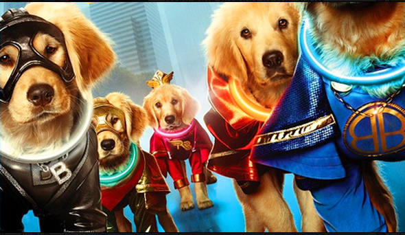

Hiring Beyond the Mirrortocracy
Culture Fit
Common weirdish questions in start-up how-to-get-hired blogs fall into three categories:
-
dedication/obsession
-
smartness questions
-
are you like me?
-
Culture Fit: The Most Important Thing Ever
-
-
-
Also: illegal to discriminate against stuff like country of origin, family status, gender
Fear
False positives
-

-
False negatives
Being Amazing Instead
Reminders
-
Revealing bias
-
Having a system
System
-
Avoid being rushed
-
Follow Up
-
Standardize questions
-
Train interviewers
-
Blind interviews
Practice
Listening to other accents
Working on diverse teams
Keeping track of what occurs, not just what you remember
What kind of team do you need?

/